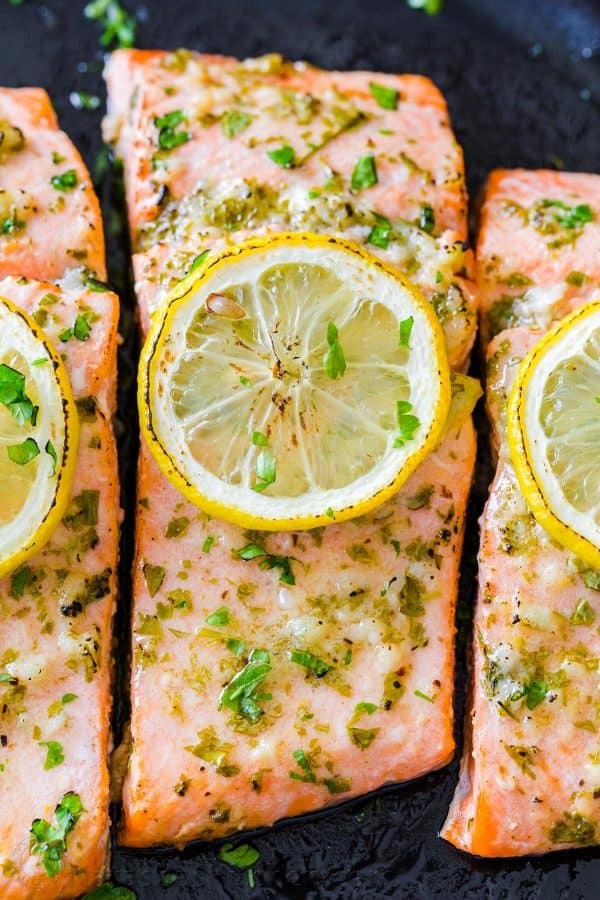

Baked Salmon

Description
This flakey, flavorful, and fast recipe will be your
new favorite. This dijon and garlic dressing can be used
on any seafood, including lobster, crab, and shrimp. You're
about to find out why salmon is the most popular!
Ingredients
- 1 1/2 lbs salmon filets
- 2 tbs parsley
- 2 tbs olive oil
- 2 tbs fresh lemon juice
- 3 garlic cloves
- 1/2 tbs dijon mustard
- 1/2 tsp salt
- 1/8 tsp pepper
- 1/2 lemon, sliced into 4 rings
Instructions
- Preheat to oven to 450 degrees. Line a rimmed baking
sheet with foil. Cut the salmon into four portions and
line them skin down on the baking sheet.
- In a small bowl, mix together the parsley, minced garlic, olive oil,
lemon juice, mustard, salt, and pepper.
- Place the sauce on top on the salmon and then top
them with the lemon slices.
- Bake the salmon in the preheated oven for 12-15 minutes.
Suggested sides